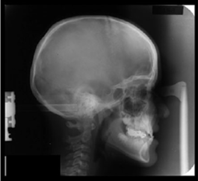

Recent Publications
Here are some recent publications from the lab.
Effects of climate on skeletal morphology in humans
Cho EO, Cowgill LW, Middleton KM, Blomquist GE, Savoldi F, Tsoi J, Bornstein MM. 2022. The influence of climate and population structure on East Asian skeletal morphology. J Hum Evol 173:103268.
Advances in imaging of crocodylian skulls
Holliday CM, Sellers KC, Lessner EJ, Middleton KM, Cranor C, Verhulst CD, Lautenschlager S, Bader K, Brown MA, Colbert MW. 2022. New frontiers in imaging, anatomy, and mechanics of crocodylian jaw muscles. Anat Rec [Internet]. Available online
Effects of skull flattening on jaw muscle evolution
Sellers KC, Nieto MN, Degrange FJ, Pol D, Clark JM, Middleton KM, Holliday CM. 2022. The effects of skull flattening on suchian jaw muscle evolution. Anat Rec. Available online
Craniofacial growth and morphology
Knigge RP, Hardin AM, Middleton KM, McNulty KP, Oh H, Valiathan M, Duren DL, Sherwood RJ. 2022. Craniofacial growth and morphology among intersecting clinical categories. Anat Rec 305(9): 2175-2206
Using ternary plots to visualize muscle actions
Cost IN, Sellers KC, Rozin RE, Spates AT, Middleton KM, Holliday CM. 2022. 2D and 3D visualizations of archosaur jaw muscle mechanics, ontogeny and phylogeny using ternary diagrams and 3D modeling. J Exp Biol 225 (Suppl_1): jeb243216.
Estimating craniofacial growth cessation
Hardin AM, Knigge RP, Oh HS, Valiathan M, Duren DL, McNulty KP, Middleton KM, Sherwood RJ. 2022. Estimating Craniofacial Growth Cessation: Comparison of Asymptote- and Rate-Based Methods. Cleft Palate Craniofac J 59:230–238.

Bayesian approach to longitudinal craniofacial growth
Sherwood RJ, Oh HS, Valiathan M, McNulty KP, Duren DL, Knigge RP, Hardin AM, Holzhauser CL, Middleton KM. 2021. Bayesian approach to longitudinal craniofacial growth: the Craniofacial Growth Consortium Study. Anat Rec 304:991–1019.

Estimating peak height velocity in individuals
Boeyer ME, Middleton KM, Duren DL, Leary EV. 2020. Estimating peak height velocity in individuals: a comparison of statistical methods. Ann Hum Biol 47:434–445.
Palatal biomechanics in Tyrannosaurus
Cost IN, Middleton KM, Sellers KC, Echols MS, Witmer LM, Davis JL, Holliday CM. 2020. Palatal Biomechanics and Its Significance for Cranial Kinesis in Tyrannosaurus rex. Anat Rec 303:999–1017.

Gigantism in saurischian dinosaurs
Tsai HP, Middleton KM, Hutchinson JR, Holliday CM. 2020. More than one way to be a giant: Convergence and disparity in the hip joints of saurischian dinosaurs. Evolution 74:1654–1681.

Biomechanics of the suspensorium in reptiles
Wilken AT, Sellers KC, Cost IN, Rozin RE, Middleton KM, Holliday CM. 2020. Connecting the chondrocranium: Biomechanics of the suspensorium in reptiles. Vertebrate Zoology 70:275–290.

Fertility and status in World War II refugees
Lynch R, Lummaa V, Panchanathan K, Middleton K, Rotkirch A, Danielsbacka M, O’Brien D, Loehr J. 2019. Integration involves a trade-off between fertility and status for World War II evacuees. Nat Hum Behav 3:337–345.
Diet-dependent effects on lifespan and fecundity
Ng’oma E, Fidelis W, Middleton KM, King EG. 2019. The evolutionary potential of diet-dependent effects on lifespan and fecundity in a multi-parental population of Drosophila melanogaster. Heredity 122:582–594.
3D Muscle Architecture
Sullivan SP, McGechie FR, Middleton KM, Holliday CM. 2019. 3D Muscle Architecture of the Pectoral Muscles of European Starling (Sturnus vulgaris). Integr Org Biol 1:oby010.

Cranial kinesis in Varanus exanthematicus
Wilken AT, Middleton KM, Sellers KC, Cost IN, Holliday CM. 2019. The roles of joint tissues and jaw muscles in palatal biomechanics of the Savannah monitor (Varanus exanthematicus) and their significance for cranial kinesis. J Exp Biol 222:1–14.